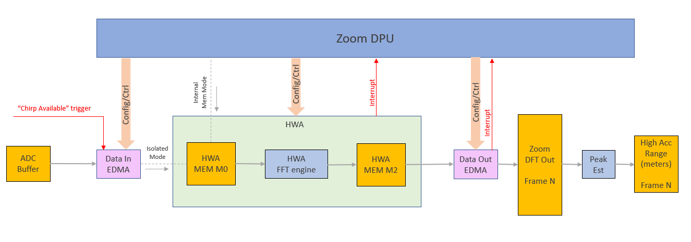

Introduction
The Zoomproc or Zoom processing DPU supports zoom FFT of given time domain input signal, to achieve high accuracy frequency measurements. This in turn, translates into range measurements.
Block Diagram
The top-level block diagram of the DPU is shown in the figure below.

Zoom processing DPU top-level diagram
Zoom DPU Functioning
The zoom processing DPU receives ADC samples from the ADC buffer and performs:
- Zoom FFT on the frequency band of interest,
- Peak finding and corresponding computation of high accuracy range measurement.
The zoom FFT processing is executed on HWA. Data transfers from ADC buffer to HWA memory and from HWA memory to zoom out are achieved using EDMA. The effective processing is always on one chirp samples. However, these samples could be a result of accumulation of multiple chirps together, for improved SNR of the input signal. The scheme allows for running in the following modes:
- Isolated mode: The DPU can be run with a wrapper, as a standalone application. In this mode, the DPU feeds directly on the ADC data from the front end and is useful if the user already knows the bins (IF frequencies) of interest to be zoomed into. The intent is to save additional resources,
- Internal Memory mode: Here, the DPU is operated in sequence after the range DPU (1D FFT) and assumes that the ADC data is already available in the HWA memory bank M0. Also, the peak bins to zoom in are derived from the 1D FFT output.
Usage Overview
API
To exercise the DPU functionalities, the application shall call the following APIs in sequence
Example Usage
Include the below file to access the APIs
DPU Initialization Example
void zoomProcDpuTest_dpuInit()
{
int32_t errorCode = 0;
if (zoomProcDpuHandle == NULL)
{
DebugP_log (
"Debug: ZoomProc DPU initialization returned error %d\n", errorCode);
return;
}
}
DPU Configuration Parsing Example
pHwConfig = &zoomProcDpuCfg.hwRes;
params = &zoomProcDpuCfg.staticCfg;
params->isTestMode = true;
params->numTxAntennas = testConfig->numTxAntennas;
params->numVirtualAntennas = testConfig->numTxAntennas * testConfig->numRxAntennas;
params->freqRes = testConfig->freqRes;
params->zoomRngFactor = testConfig->zoomRngFactor;
params->numRangeBins = testConfig->numAdcSamples/2;
params->numDftBins = testConfig->numDftBins;
params->zoomFftSize = testConfig->zoomFftSize;
params->zoomSamplesOneSide = testConfig->zoomSamplesOneSide;
params->interpFactor = (testConfig->zoomFftSize >> mathUtils_ceilLog2(testConfig->numAdcSamples));
params->numChirpsPerFrame = testConfig->numChirpsPerFrame;
params->peakLoc = testConfig->peakLoc;
params->ADCBufData.dataProperty.numAdcSamples = testConfig->numAdcSamples;
pHwConfig->edmaInCfg.dataIn.channel = DPC_OBJDET_DPU_ZOOMPROC_EDMAIN_CH;
pHwConfig->edmaInCfg.dataIn.channelShadow = DPC_OBJDET_DPU_ZOOMPROC_EDMAIN_SHADOW;
pHwConfig->edmaInCfg.dataIn.eventQueue = DPC_OBJDET_DPU_ZOOMPROC_EDMAIN_EVENT_QUE;
pHwConfig->edmaInCfg.dataInSignature.channel = DPC_OBJDET_DPU_ZOOMPROC_EDMAIN_SIG_CH;
pHwConfig->edmaInCfg.dataInSignature.channelShadow = DPC_OBJDET_DPU_ZOOMPROC_EDMAIN_SIG_SHADOW;
pHwConfig->edmaInCfg.dataInSignature.eventQueue = DPC_OBJDET_DPU_ZOOMPROC_EDMAIN_SIG_EVENT_QUE;
pHwConfig->intrObj = &intrObj;
pHwConfig->edmaOutCfg.dataOutZoom.channel = DPC_OBJDET_DPU_ZOOMPROC_EDMAOUT_CH;
pHwConfig->edmaOutCfg.dataOutZoom.channelShadow = DPC_OBJDET_DPU_ZOOMPROC_EDMAOUT_SIG_SHADOW;
pHwConfig->edmaOutCfg.dataOutZoom.eventQueue = DPC_OBJDET_DPU_ZOOMPROC_EDMAOUT_EVENT_QUE;
pHwConfig->zoomDftOutSize = testConfig->numDftBins * sizeof(cmplx32ImRe_t);
if (gPeakLoc < testConfig->zoomSamplesOneSide)
{
gZoomInRbin = 0;
}
else if (gPeakLoc > (params->numRangeBins - testConfig->zoomSamplesOneSide))
{
gZoomInRbin = (params->numRangeBins - 2 * testConfig->zoomSamplesOneSide) * params->interpFactor;
}
else
{
gZoomInRbin = (gPeakLoc - testConfig->zoomSamplesOneSide) * params->interpFactor;
}
pHwConfig->zoomInRbin = (uint16_t *) &gZoomInRbin;
pHwConfig->hwaCfg.paramSetStartIdx = 0;
pHwConfig->hwaCfg.dmaTrigSrcChan = 0;
pHwConfig->edmaHandle = gEdmaHandle[0];
zoomProcDpuCfg.staticCfg.ADCBufData.dataProperty.dataFmt = DPIF_DATAFORMAT_REAL16;
zoomProcDpuCfg.staticCfg.ADCBufData.dataProperty.adcBits = 2U;
zoomProcDpuCfg.staticCfg.ADCBufData.dataProperty.numChirpsPerChirpEvent = 1U;
zoomProcDpuCfg.staticCfg.ADCBufData.data = (void *) gAdcTestBuff;
zoomProcDpuCfg.hwRes.zoomDftOut = (cmplx32ImRe_t *) gZoomDftOut;
DPU Configuration Example
&zoomProcDpuCfg);
if(retVal < 0)
{
DebugP_log(
"DEBUG: Zoom DPU config return error:%d \n", retVal);
}
DPU Process Trigger Example
if(retVal < 0)
{
DebugP_log(
"DEBUG: Zoom DPU process return error:%d \n", retVal);
}
DPU Close Example
if(retVal < 0)
{
DebugP_log(
"DEBUG: Zoom DPU deinit return error:%d \n", retVal);
}
 1.8.20
1.8.20